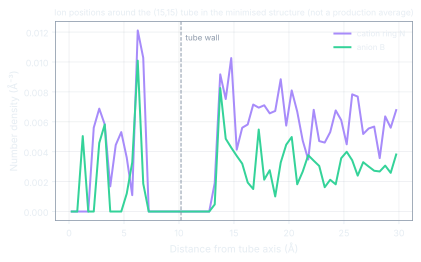

01 · The system
One tube, one anion, four cations that differ only in chain length.
A (15,15) armchair single-walled nanotube, 50 Å long and 20 Å across, sits in a periodic box with 600 ion pairs of [EMIM][BF₄], [BMIM][BF₄], [HMIM][BF₄] or [OMIM][BF₄]. NAMD 2.14 with the OPLS-AA force field and CL&P ion parameters, particle-mesh Ewald electrostatics, a 1 fs step. Minimisation, five annealing cycles between 300 and 650 K, 5 + 5 ns of NPT equilibration, then 20 ns of production per system.
| What the repository verifies | Value | From |
|---|
Ions inside the tube minimised structure
Ion positions relative to the tube axis in the 19,260-atom minimised configuration. This is the starting structure of the published simulations, not a production average; the production trajectories are not in the repository.
02 · Chain length published results
Longer chains lie down on the wall and bind harder. Shorter chains stand their ring against it and move faster.
The values below are reported in the article (Structural Chemistry 35, 1743–1753, 2024). The structures are the ion-pair coordinate files in this repository.
[EMIM][BF₄]1-ethyl-3-methylimidazolium · C2 chain
−1.5kcal/mol per ion, interaction with the CNT
0.78H-bonds per cation in the tube
0.44D in CNT, ×10⁻¹⁰ m²/s
[EMIM]⁺, C2
The ring parks flat against the sidewall. Weakest binding of the series, fewest hydrogen bonds, fastest self-diffusion: the highest confined conductivity, 0.005 S/m.
[BMIM]⁺, C4
A butyl chain starts to compete with the ring for the wall. Binding roughly doubles relative to [EMIM]⁺. This is the system whose minimised structure is in the repository.
[HMIM]⁺, C6
The hexyl tail lies along the graphene-like wall and the ring tilts toward the axis, where anion contact and hydrogen bonding are more likely.
[OMIM]⁺, C8
Strongest interfacial binding, −8.75 kcal/mol per ion, and the most hydrogen bonds, about one per cation. Binding and mobility pull in opposite directions along the series: the design trade-off for CNT–IL electrolytes.
| Ionic liquid | Chain | Dcation bulk (m²/s) | Dcation in CNT (m²/s) | H-bonds per cation | Eint with CNT (kcal/mol/ion) |
|---|
Values as reported in the article; the repository does not contain the production trajectories needed to recompute them.
03 · Confinement published results
Inside the tube the cations slow down three- to four-fold.
Mean-squared displacement of the cations drops by a factor of three to four on confinement for every chain length, with [EMIM]⁺ the fastest in both environments. Binding strength grows with chain length while mobility falls, so the best conductor of the series is the weakest binder.
04 · What is in the repository
Structures, one complete NAMD minimisation and its log.
The CNT and the four ion-pair structures, the NAMD input for the minimisation of the [BMIM][BF₄] system, its 10,000-step energy log, the trajectory it wrote and the final coordinates. The structure file and force-field parameters it references are not included, so the run cannot be re-executed from the repository as is.
git clone https://github.com/Soham-ChemE/MD-IL-CNT-Interfacial-Interactions.git
cd MD-IL-CNT-Interfacial-Interactions
pip install -r requirements.txt
./reproduce.sh # rebuilds this page's data and figures from the NAMD files
vmd CNT.pdb IL219-Mixed_min.dcd # inspect the minimisation trajectory
The Packmol-built configuration starts with large overlaps (van der Waals energy above 2 × 10⁶ kcal/mol) and relaxes within the first few hundred conjugate-gradient steps; the remaining 9,000 steps refine the electrostatics.
CiteR. Biswas, P. Banerjee and S. S. Kavathekar, "Molecular dynamics studies on interfacial interactions between imidazolium-based ionic liquids and carbon nanotubes", Structural Chemistry 35, 1743–1753 (2024). doi 10.1007/s11224-024-02323-3. Process Simulation Research Group, School of Chemical Engineering, Vellore Institute of Technology.